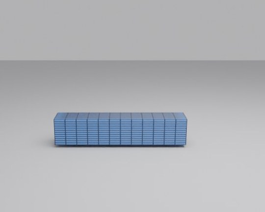
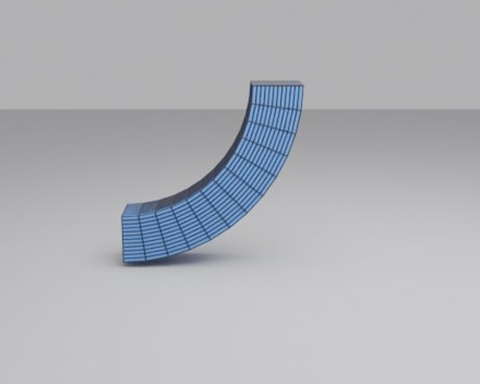

Bonus lesson
Bend
Bend curves the selected geometry into an arc, like bending a metal bar. It works in Object Mode and Edit Mode. Find it under Transform › Bend in the Object or Mesh menu, or press Shift+W.


How it works
Bend rotates a line of selected elements so they form an arc between the mouse cursor and the 3D cursor. The first positions of the two cursors set the axis to bend on. The distance from the mouse cursor to the 3D cursor controls how sharp the bend is. The angle of the mouse cursor relative to the first axis sets the bend angle.
The manual suggests trying the tool to get a feel for it, because it reacts to where you put the cursors.
Settings
Bend Angle is the amount of rotation. Radius is the sharpness of the bend. Clamp decides what happens beyond the arc. With Clamp on, the arc turns through a limited angle and the selection continues along a straight line past it. With Clamp off, the arc keeps going and lines the selection up into a circle. Holding Alt toggles Clamp while you bend.
Bend ignores the Pivot Point and the Transform Orientation. It always works on the View Plane, so line up your view first. You can turn the angle through several full rotations to make a spiral.
Because Bend depends on cursor input, Blender does not support adjusting it afterwards in the Adjust Last Operation panel.
Read the manual page on Bend.
Try it
This exercise is our own suggestion and has not been run step by step in the GUI. Add a cube, scale it long, enter Edit Mode and subdivide it several times so it has many vertices along its length. Select everything, press Shift+W and move the mouse. Click to confirm, or press Esc to cancel. Use Ctrl+Z to undo.